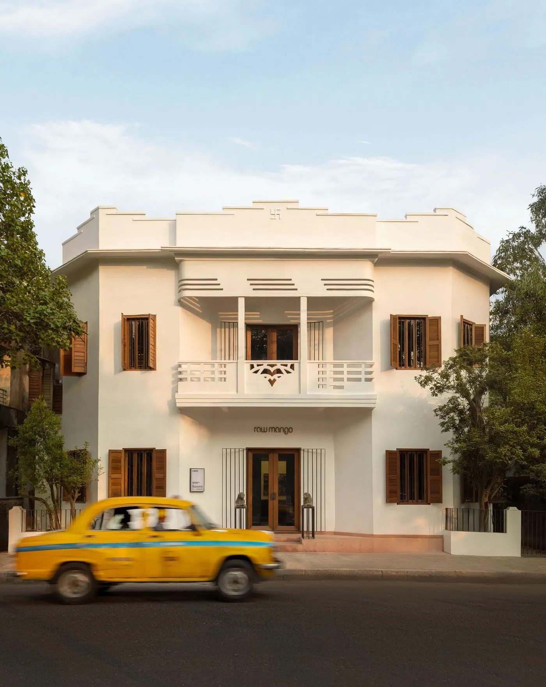
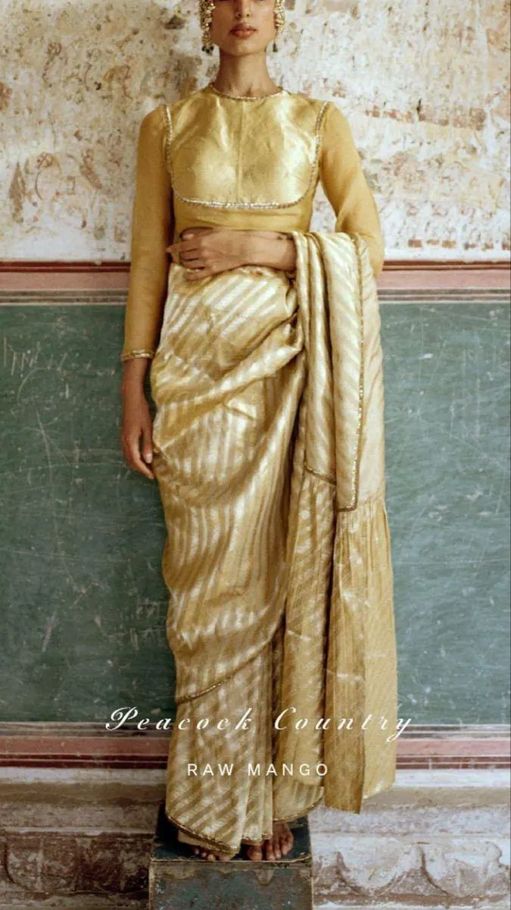
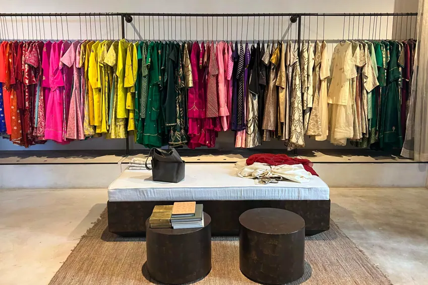
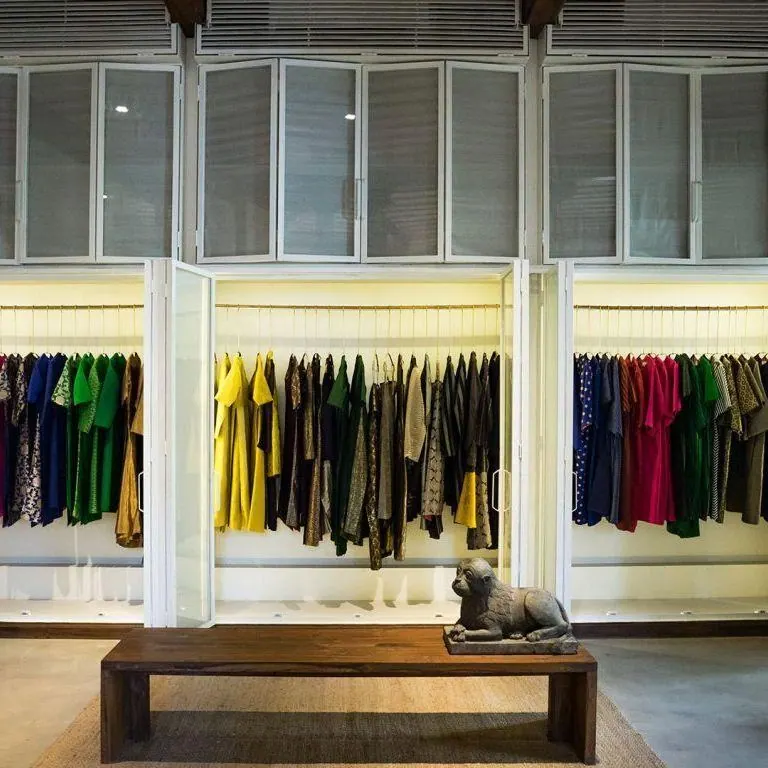
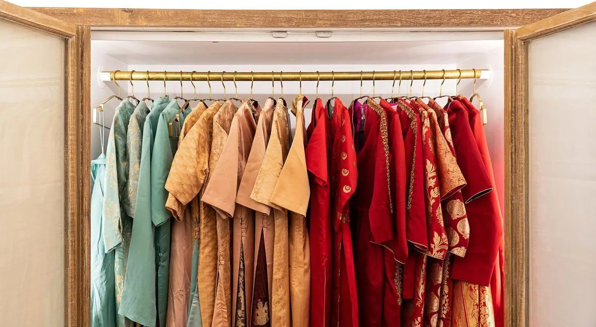
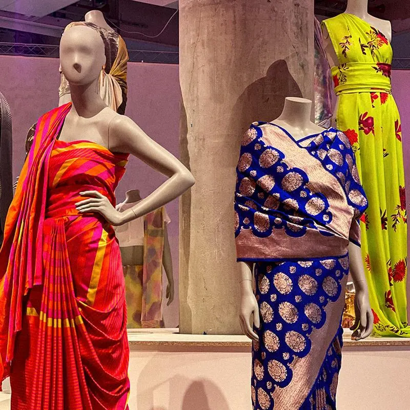
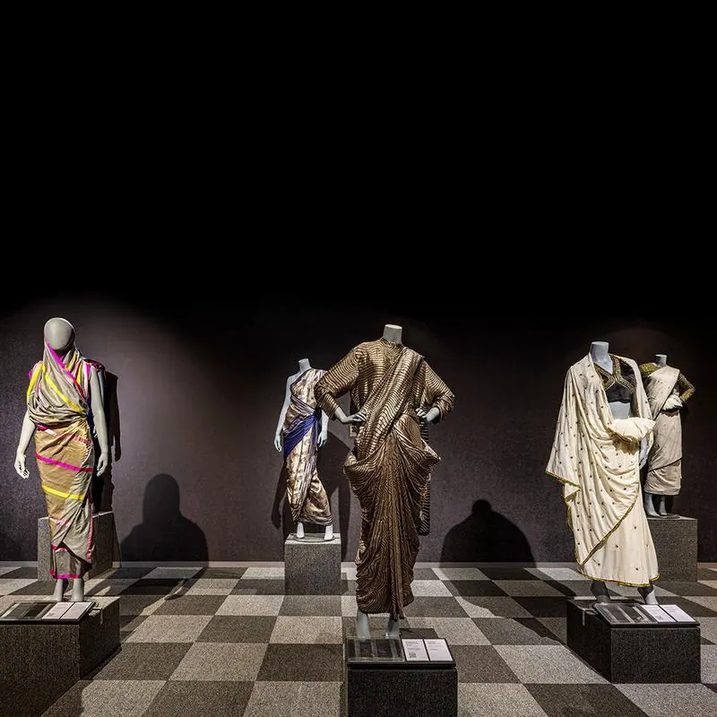
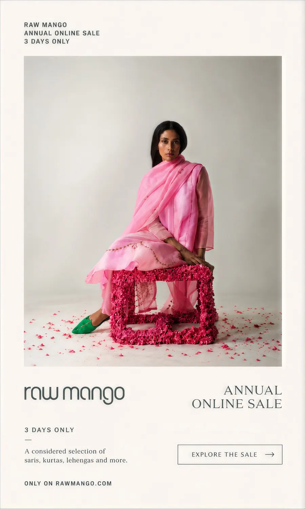

How does Raw Mango translate its creative identity into a collection calendar, product hierarchy, retail experience and production system?

Indian handloom, textile experimentation, colour, craft and contemporary design form the creative foundation. Production and retail are spread across India.
Physical stores in Indian metro cities, plus direct-to-consumer e-commerce.
Choose a panel to open it.
Every dot is a launch. The coloured band is the typical year: choose a stretch of months to see what happens then, or a dot to read about the launch.
unique styles per major collection. Rather than flooding the market with fast-fashion volumes, Raw Mango stays a textile-first house.
Separates include modern kurtas, structural blouses, lehengas and jackets, designed to be layered and re-worn.
Choose a category to see its price range against the others.

The sari is not one category among many. It is where Raw Mango's textile-led identity is most immediately legible.
Border, weave, colour and drape all become part of the finished garment, which makes the sari a natural vehicle for the brand's strengths in material and colour. Lehengas, kurtas, jackets and separates carry that language to other occasions without leaving the textile foundation.
Across cities the stores share one philosophy: local architecture, contemporary minimal interiors, custom furniture and uncluttered displays that keep the textiles in focus.





Mannequins show the relationship between textile and body. Three details deserve attention:
The online store has its own hierarchy. Step through the pages.
Turn a card to read how Raw Mango works with each technique.
Open any observation.

A pre-event Instagram Story ad for Raw Mango's Annual Online Sale, the only markdown of the year.
A hair comb, a ring and a drop earring for the brand. Drag to turn a piece, scroll or pinch to zoom.
Gaudí's house in Barcelona: bone-like columns, a scaled roof and a facade that moves like water. The ring takes its curves.
Around 1890–1910: whiplash lines and ornament taken from plants. The comb is built on the ginkgo leaf.
Photographs of Raw Mango products, stores and website belong to Raw Mango and the publications above, and appear here for academic research. Store photographs marked “Photo: Raw Mango” load from rawmango.com.